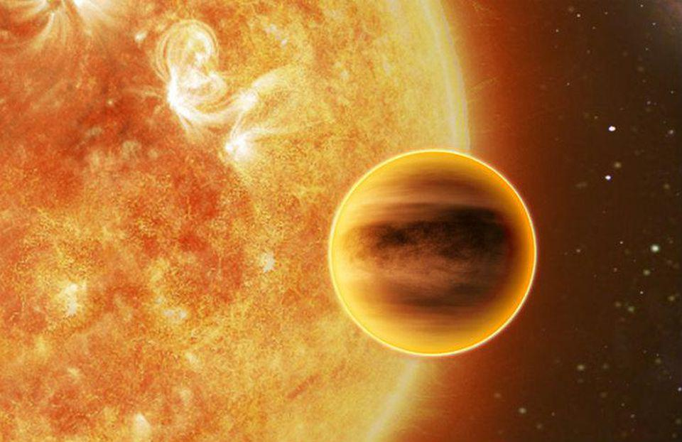

- Exoplanets Home
- 55 Cancri e
- Kepler-70b

Kepler-70b
Sometimes listed as KOI-55 b, is one of two exoplanets within orbit of the subdwarf star Kepler 70. The orbit of the planet is assumed to be about 5.76 hours. The temperatures on the planet’s surface go upward of several thousand Kelvin and its density is assumed to be 5,500 kilograms per meters cubed. Its mass is equivalent to about 0.44 Earth masses with a radius of about 0.76 Earth radii. It was discovered December 22nd, 2011 and it is debated whether or not the planet even exists as well as its sister planet. The surface temperatures hover around 7,662K.